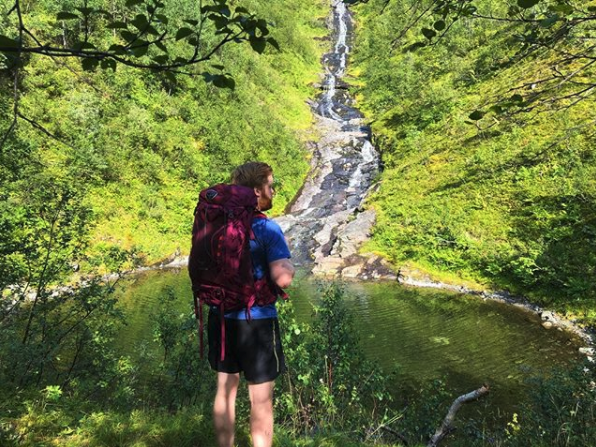

Gåpetjønna
Den mest idylliske badeplassen ein kan finne på Vartdal.
Her kan ein ta med familia eller vennegjengen, grille pølser
på dei gloheite berga medan ein tar seg ein forfriskande dukkert
slik maten kan førdøye seg. Ei skjult perle, som er ein barndomsfavoritt
blant dei fleste.
Veibeskriving: Følg skilting frå E39 innover mot Aarsetdalen.
Følg vegen i 3-4 minutt til du kjem til den deler seg opp i to.
Ta der til høgre, og fortsett igjen i nokre minutt til du ser ein
grusveg som går litt oppover. Følg grusvegen, og følg skiltinga ved
krysset framover mot Vassdalen. Når grusvegen endar, og du ser ei
lita steinbru over elva, forlet du vegen mot venstre slik du får
elva på høgre side medan du vender blikket oppover. Råsa kan være
vanskeleg å sjå, men om ein går longs elva oppover skal det godt gjerast
å ikkje finne fram til den store kulpen ved navnet Gåpetjønna.
Tid: 10 minutt.